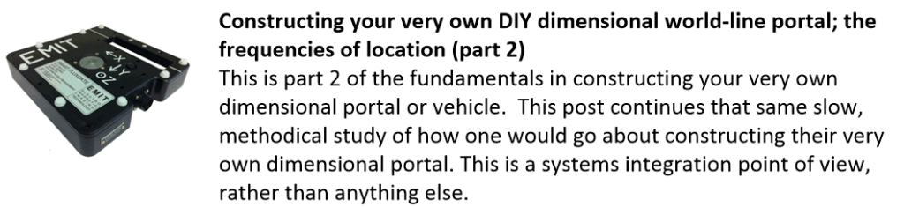
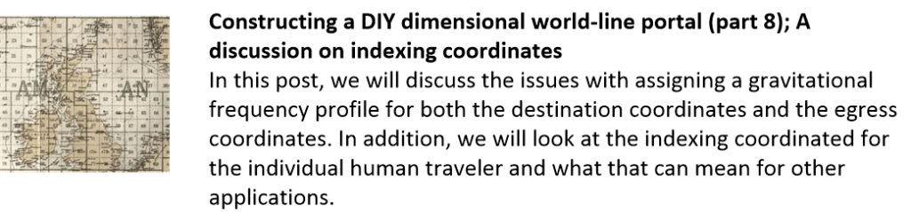
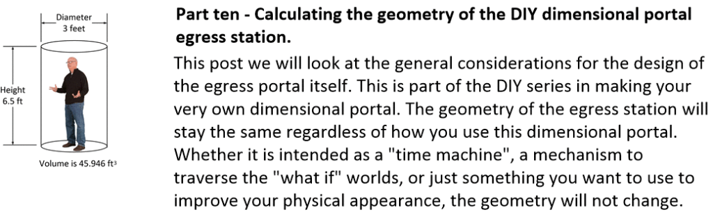

Note that this is the INTRODUCTORY portion of a long series of posts on DIY construction of a dimensional portal. This technology will permit a person to move anywhere in the universe geographically, move through time, and more in and out of different world-lines. But first, before we get into the "nuts and bolts" of such a fabrication, let's look at what is currently available to the "common man" on the internet. Thus this post.
This page is a collection of my writings on how to make a home-made dimensional portal that actually works. This portal is a “poor man’s” version of the MAJestic dimensional portal that was present in NAS NASC Pensacola Florida back in 1981. Here, we cover the theory behind it’s operation, and then get into the technical details.
Teleportation is a proven fact, and is well understood in the quantum physics world. It has been demonstrated continuously and repeatedly in the laboratory as well. Though public demonstration of large objects is not available and considered "far fetched", the fact is this is a mature technology. This technology has been in possession of the United States Navy's ONI (Office of Naval Intelligence) branch of high technology MAJestic branch, of which I was a part of.
This DIY project is everything that you need to construct your very own dimensional portal. The big missing gap is the mapping of the dimensional coordinates. Because unless you are able to lay out a destination coordinate, you will have little use for this mechanism.
The equations tend to be a tad esoteric, but it’s nothing too difficult as long as you know some basic mathematics. Just follow the narrative and the instructions and you will be just fine.
The very first post serves as a plain introduction. It serves as a “tear away” page of a nonsense at the front of a university text book. It is not at all technical in the least, and instead offers the reader other examples of what they will find if they try to search for this kind of subject on the internet.

The real “meat” of this subject follows beginning at post #2.
And it is here where you need to start taking notes, create your own “engineer’s notebook” and dust off those mathematical handbooks that are collecting dust in the study. When you read the posts, please take your time. You will see how everything fits together.

![Constructing your very own DIY dimensional world-line portal; measuring and creating frequency profiles of location (part 3)
This post continues in the discussion of building yourself a DIY dimensional portal (or some type of vehicle) for world-line crossovers and slides. This is part three. And here, in this part we will discuss measuring the frequencies of the gravity elements involved when a person enters the portal. This measurement of frequencies is the assignment of coordinates of where you are right now at the moment of teleportation.](../assets/img/diy-teleortation-technique-hardware-do-it-yourself/1-1024x305.gif)

![Constructing your very own DIY world-line dimensional portal; the mechanism that slides a person into a new reality (part 5)
In this post, we will discuss the real actual mechanism in creating a slide into another world-line. It's not enough to obtain coordinates and set up a magnetic field, you need to be able to imprint those coordinates on the traveler and make the transition happen. Here, we discuss how it works, and how this dimensional portal works to take a person from one world-line to another.](../assets/img/diy-teleortation-technique-hardware-do-it-yourself/1-3-1024x266.gif)

![Creating your very own DIY dimensional portal for world-line access and teleportation (part 7); traveler notes
In this post we will cover a few basics regarding the operation of the egress portal for dimensional change. In this post our concentration will be on the magnetic flux itself as well as the way the traveler must enter the portal. For if you do not enter it properly, any thing could happen. And let's not at all forget the horror movie "The Fly" to remind us of this issue. So let's talk about this.](../assets/img/diy-teleortation-technique-hardware-do-it-yourself/1-5-1024x269.gif)



Further posts, not yet included, concern functional details related to material selection, and other construction notes.